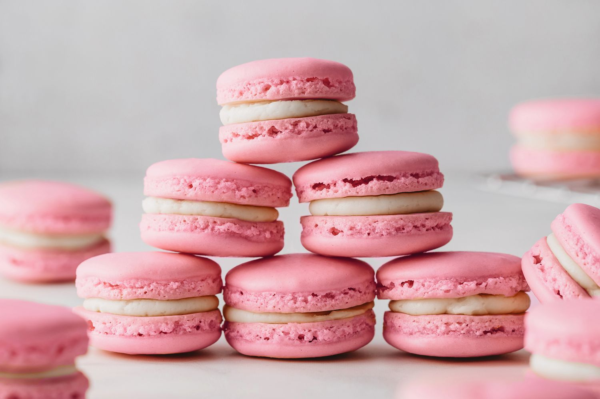

French Macaron Recipe
Ingredients:
- Egg Whites
- Cream of Tartar
- Superfine Sugar
- Fine Almond Flour
- Gel Food Coloring (optional)
Instructions:
- Add cream of tartar to your aged room temperature egg whites and beat until very soft peaks form. This takes a few minutes of beating.
- Now add your superfine sugar in 3 additions and beat until stiff glossy peaks form
- Then add your optional gel food coloring. It's important to add gel food coloring to the egg whites directly, instead of the finished macaron batter.
- Set your stiff egg whites aside.
- Sift the almond flour and confectioners' sugar together in a large bowl.
- In 3 separate additions, begin slowly folding in the beaten egg whites in a circular motion. I always eyeball the amount.
- After only 1 addition, the batter will be very thick and dry.
- The batter will begin to loosen up after you add the 2nd and 3rd addition.
- After that 3rd addition of egg whites, you're at the macaronage stage. You need to keep folding and deflating air until you reach the perfect consistency.
